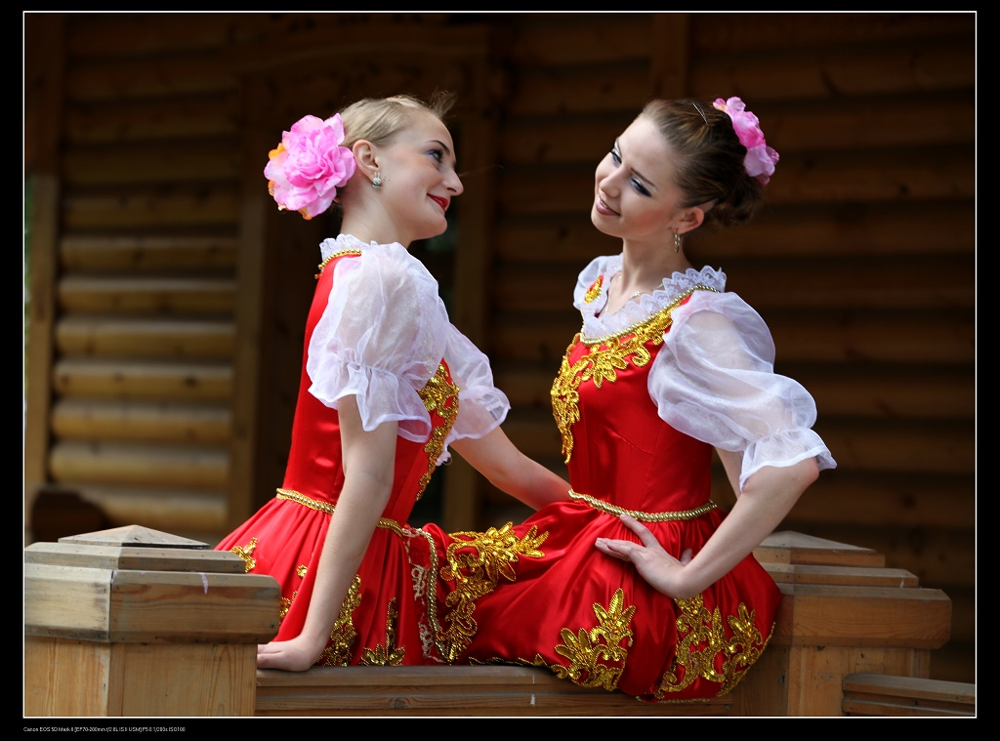

Many students who are about to study in Russia are still unfamiliar with the customs and traditions of the country. To help everyone better integrate into local life upon arrival, Weijiu Study Abroad experts have compiled information about Russian customs and traditions, hoping everyone can gain an understanding. When invited as a guest, or during New Year, holidays, or birthdays, giving flowers is a must...

Many students planning to study in Russia are still unfamiliar with the customs and traditions of Russia. To help everyone better integrate into local life upon arrival, Weijiu Study Abroad experts have compiled information about Russian customs and traditions, hoping everyone can gain some understanding.When invited as guests, or during New Year, holidays, or birthdays, giving flowers is essential. However, even-numbered flowers should not be given; usually, three, seven, or nine flowers are fine. Even-numbered flowers are considered prepared for funeral ceremonies. Additionally, for older women, brighter flowers like rose red or bright red are recommended to appear lively. For younger women, lighter flowers like pink or yellow are usually chosen to represent purity. But for Valentine's Day, red roses must be the best.
Most Russians are Orthodox. When visiting churches that aren't entirely open to tourists, women need to wear headscarves, while men must remove their hats. Whether or not you are Orthodox.
If you line up to shop, cutting in is considered uncivilized. Also, in public places, you must not shout loudly, or you will be met with disdain. When boarding, you should proactively give up your seat to the elderly; otherwise, they will willingly ask you to stand up and then sit down with a clear conscience.
When chatting with Russians you are not very familiar with, try not to discuss topics such as the collapse of the Soviet Union, Stalin, or the ownership of Chechen territory.
Except for fast food restaurants, most people usually tip when dining in restaurants or restaurants, because most of the staff's income comes from tipping. It depends on your satisfaction with the hostess, usually about 10-15% of the meal fee.
In Russia, bargaining is rare, especially in large state-owned stores. Aside from the discounts or discounts indicated on the product, prices are basically not negotiable. At flea markets, bargaining is possible, but not much. Usually, by checking two or three stalls' prices, you can get a good idea of the price.
Russians usually greet each other with a handshake. When close friends reunite after a long time, they use hugs and kisses. Usually, after hugging, they kiss each other's cheeks three times—first right, then left, then right. When meeting a stranger, don't initiate a handshake, and don't be overly intimate. Unless she takes the initiative to shake your hand, you can say a few words complimenting her youth and beauty, and you'll definitely win her favor.
Watching performances in theaters, whether ballet or opera, is an important part of daily life for Russians. For such occasions, dress formally. And never be late. After the show starts, do not whisper or eat, and do not answer phone calls. Otherwise, you will be asked to leave.
Russian distinguishes between the formal "vy" (Вы) and the informal "ty" (ты). Use "vy" for elders, teachers and strangers of any age as a sign of respect; "ty" is reserved for close friends and siblings at home. The two forms are not interchangeable.
When renting a house in a private residence, generally don't hold gatherings too late. After 11 o'clock, no music or loud conversations are allowed. Otherwise, neighbors will come knocking on your door. Also, try not to call after 10 p.m., as this can be very rude. When renting a landlord's property, it's best to get the landlord's permission when inviting classmates over to hang out. Also, do not touch the landlord's belongings recklessly. It's best to coordinate cooking with the landlord and stagger the cooking time to avoid fighting over the kitchen later. Also, at home, generally avoid cooking oil-fried dishes with strong grease smoke, because most Russian kitchens do not have range hoods, which would make the house dirty and not good.
被邀请做客，或者过年，过节，过生日时，赠送鲜花是必不可少的。但是切不可送双数花朵，一般以三只，七只，九只都可以，送双数花朵是被认为送葬礼时给死人准备的。另外，送给年纪大的女士要送鲜艳一点的，比如玫瑰红或者大红色，显的有活力。而送年轻姑娘，一般选择比较浅色花，粉色，黄色等等表示纯洁。但情人节玫瑰一定要是红色的最好。
俄罗斯人大部分信奉东正教，去一些不完全属于旅游开放的教堂，女士需要戴头巾，男士则需脱帽。不管你是不是信奉东正教。
买东西自觉排队，加塞会被认为是没教养的行为。另外，在公共场切实不可大声喧哗，否则会遭白眼。上车应该主动给老年人让座位，否则他们也会主动让你站起来，然后心安理得的坐下。
跟不是很熟悉的俄罗斯人聊天时，尽量不要谈一些关于苏联解体，斯大林，还有车臣领土的归属等问题。
除快餐店外，一般在饭店或者餐厅里就餐时都要给小费，因为，服务人员的大部分收入都是来自小费。视你对服务小姐的满意程度多少不等，一般是餐费的10-15%左右。
在俄罗斯基本上很少有砍价的时候，尤其是在国营大型商店，除了在商品上注明的折扣或者优惠外，基本上价格没有什么商量的余地。在跳蚤市场里可以砍价，但是幅度不大，一般转上两三家摊位价格基本上就能很了解商品的价格了。
俄罗斯人见面以握手礼为主，特别好的朋友久别重逢，会用拥抱和亲吻。一般是拥抱后互相亲吻脸颊三次，先右再左再右。与陌生女士相见，不要主动握手，更不能过分亲热。除非对方主动跟你握手，可以说两句赞美女士年轻漂亮的话，一定会得到对方的好感。
在剧院看演出，不论是芭蕾舞还是歌剧对于俄罗斯人来说都是生活中一件很重要的事情，去这样的场合，要着正装。并且绝不可以迟到。演出开始后切不可交头接耳或者吃东西，更不能接听电话。否则会被请出去的。
您和你不可以乱用。一般对长辈或者老师都要称呼“您(вы)”，还有在街上遇到的陌生人时不论多大年岁，为表示尊重都称您。只有比较熟悉的朋友或者家里的兄弟姐妹才称“你(ты)”。
在民宅里租房子住的时候，一般不要把聚会开的太晚，十一点以后就不可以放音乐或者高声说话了。否则邻居就要来敲你家的门了。另外尽量不要在十点以后再给人家打电话，否则会显的很不礼貌。租住有房东的房子时，请同学来家里玩最好经过房东同意。而且不能乱动房东的东西。做饭最好跟房东商量好，把时间错开，省的到时候抢厨房用。另外，在家一般不要做一些油烟很大的油爆菜，因为，俄罗斯大部分家庭的厨房里是没有抽油烟机的，搞的家里很脏就不太好了。
English edition. Select 中文原文 to compare with the original Chinese article.
This article is edited and published by Liaoning Overseas Study Service Co., Ltd. The content is for study abroad planning reference only. Unauthorized reproduction is prohibited.
Information on policies, regulations, admissions brochures, and program fees is timely. Please refer to the latest releases from official institutions and institutions in various countries; For detailed verification, please Contact an advisor。